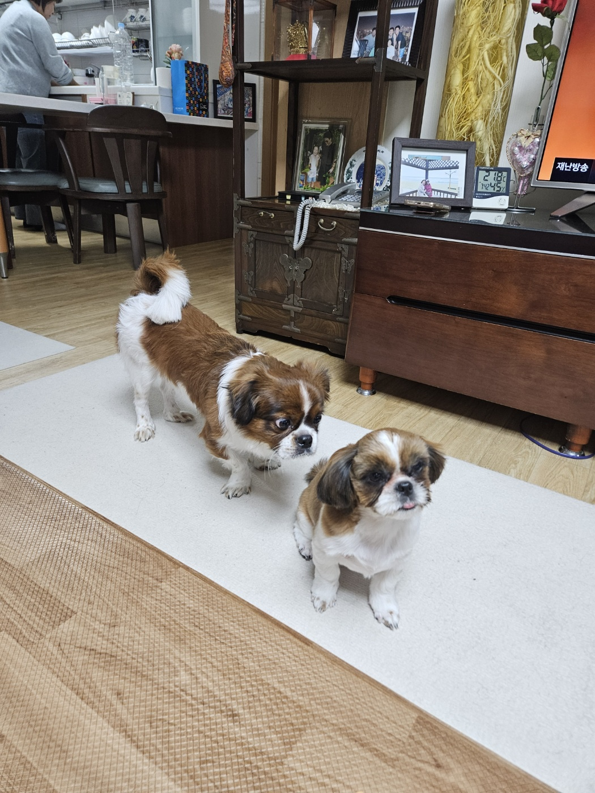

소개

꼬두리란 꼬리와 두리를 합친말로 두마리의 시츄이다.
두리가 먼저 태어나 할머니와 자랐고 3살이 되던 시점에 수빈이가 할머니집에 놀러와 두리를 처음 만나게 되었다. 이떄부터 수빈이가
시츄에 빠지기 시작하여 온갖 동물병원, 애견샵을 돌아다니다가 꼬리를 처음만나게 되어 데리고 오게 되었다. 여기서 꼬리가 오게 된
많은 일들이 있었지만 이 이야기는 나중에 따로 애기해보도록 하자.
꼬리는 방구의 가족이며 현 시점으로 6개월이 되었다(12.04)
두리는 할머니의 가조기며 현 시점으로 3살이 되었다.
이 두마리의 강아지 모두 시츄이며 우리는 하나의 가족이다.